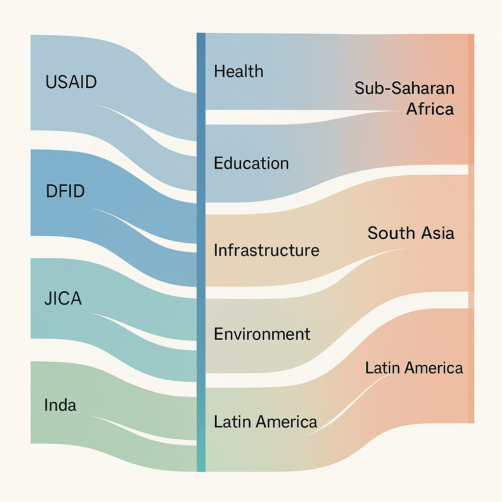

AI Against Aid Waste
Detecting Funding Redundancy With NLP
🗂️ Background
Every year, over $200 billion is poured into global development aid — yet millions are quietly lost to duplicated efforts. Without smart systems to detect overlap, donor organizations often fund projects that already exist, wasting precious resources. Our tool changes that. By using AI to instantly identify similar initiatives across agencies and regions, we help ensure every dollar supports a truly unique, high-impact intervention — not another copy of what’s already been done.
🧮 This is Where the Viz for Problem Statement Will be Displayed
